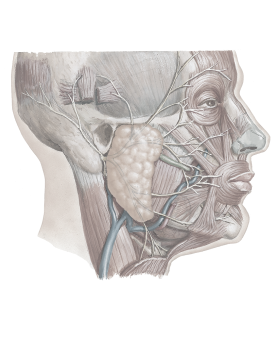

Parotid gland
Facial nerve (emerging from stylomastoid foramen)
Sternocleidomastoid muscle
External jugular vein
Temporal branches
Parotid duct (of Stensen)
Masseter
Facial artery and vein
Cervical branch
1
2
3
4
5
6
7
8
9